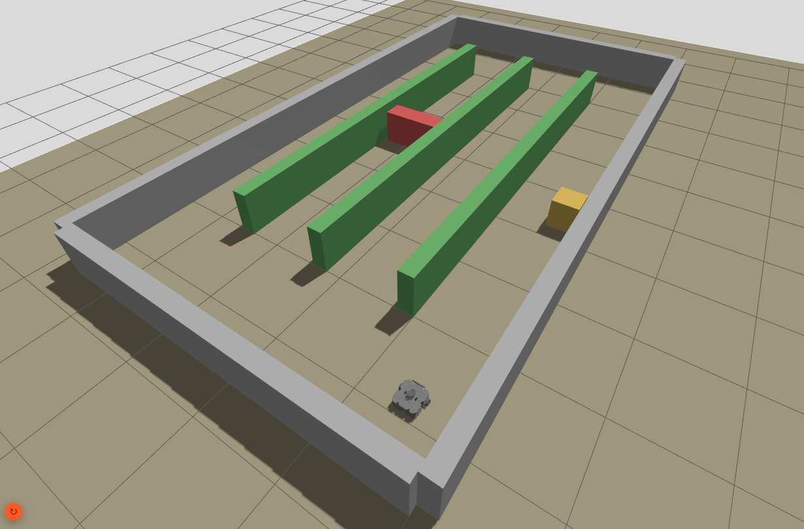
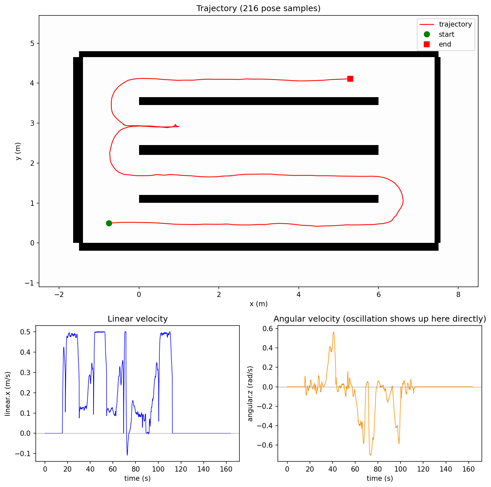
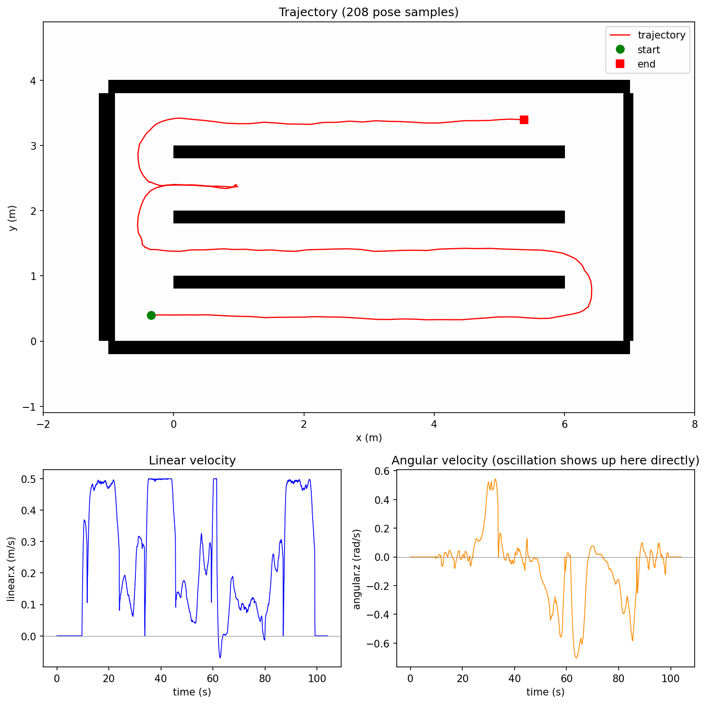
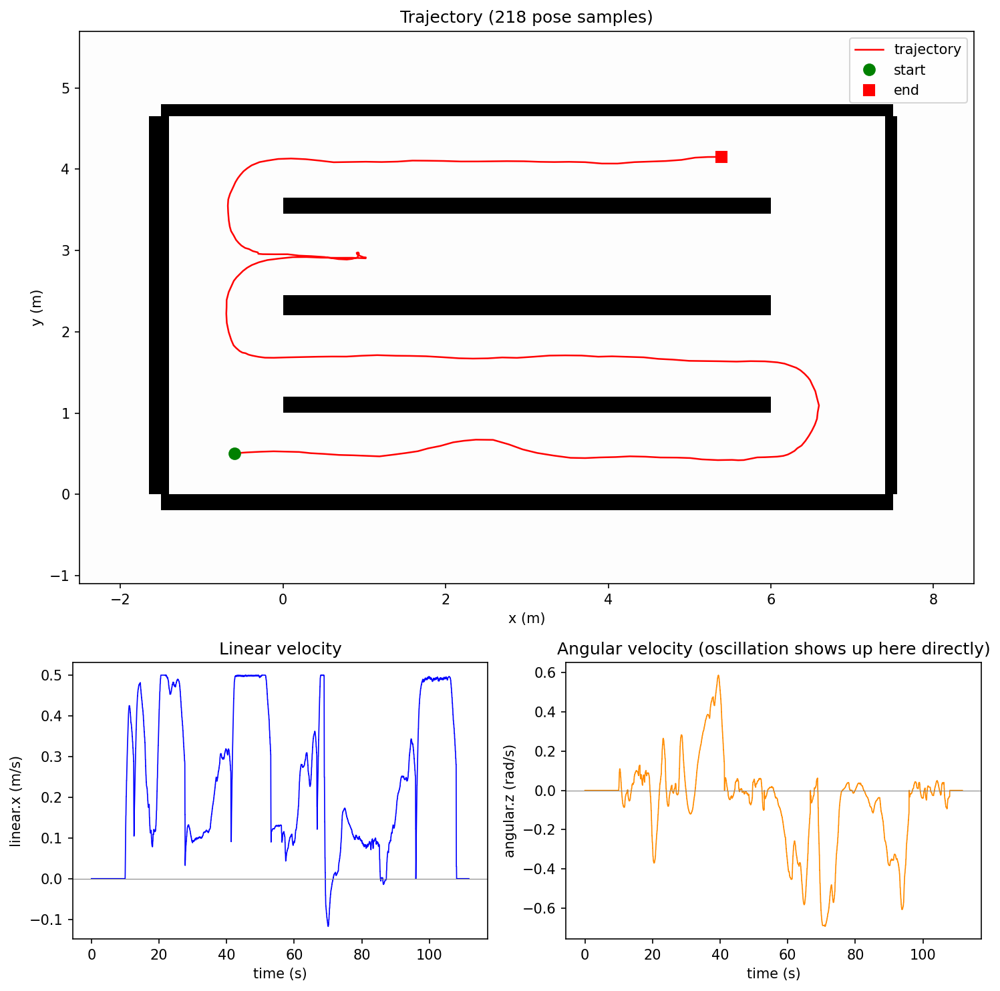

Project Overview
A ROS2 Jazzy / Gazebo Harmonic / Nav2 simulation of a TurtleBot3 navigating a greenhouse's crop rows in a boustrophedon (back-and-forth) pattern, developed as a take-home technical assessment for a Robotics Software Engineer role. The robot must traverse narrow row corridors smoothly, detect and recover from an unexpected obstacle blocking a row, and report mission progress throughout.
The simulation environment itself — world geometry, static map, and mission waypoints — is generated parametrically rather than hand-authored: a single configuration file defines row count, row width, row length, and headland size, and three scripts derive the Gazebo world, occupancy grid, and waypoints from it. Changing any dimension is a one-line edit and a re-run, not a manual re-authoring of SDF/YAML files — put directly to the test in the narrow-row scenario below.

Mission & Recovery Design
The mission node drives each row's entry and exit waypoints in sequence using Nav2's BasicNavigator. Row direction is decided dynamically at runtime rather than fixed in advance: a naive boustrophedon alternates entry side by row index, but this breaks the moment a row is skipped — the robot never reaches the far side of a blocked row, so forcing the next row's entry to the "expected" side would send it on an unnecessary crossing back to a side it never reached. A tracked current_side state instead flips only when a row is genuinely completed.
- The core recovery challenge: every row's headland connects to every other row's headland at both ends (required by the environment's design). This means Nav2's global planner can "solve" a blocked row by silently detouring through a neighboring row and back in — reaching the correct final position without ever actually driving the blocked row.
- Detection: the robot has no way to know about a blockage until its own sensors observe it, so the mission node continuously monitors the live replanned path length against a geometrically-derived threshold for the entire duration of each leg. As soon as a replan indicates a detour rather than a direct traversal, the task is cancelled immediately rather than letting the robot drive the full detour.
Costmap & Controller Tuning
Nav2's inflation layer was tuned specifically for narrow-corridor navigation, following Nav2's own tuning guidance: cost-aware planners produce suboptimal paths in flat, zero-cost regions, so a smooth cost gradient across the full navigable width — rather than a wide flat zero-cost strip — lets the planner's inherent per-cell distance cost correctly discourage long detours around a partial obstacle instead of being confused by an uninformative flat cost landscape.
AMCL's correction cadence was also tightened for long, feature-sparse rows, where along-corridor position is weakly constrained by lidar scan matching and relies mostly on odometry between corrections — more frequent, smaller corrections noticeably reduced low-frequency steering oscillation during straight-row driving.
Results
Normal Row Traversal
Smooth, direct traversal of a 1m-wide row with the tuned costmap and controller configuration.
Normal row traversal

Narrow Rows (0.8m)
The same mission re-run after narrowing every row and headland to 0.8m — a live dimension change of exactly the kind the parametric world generator was built to absorb without hand-editing any world or map files. Costmap tuning was revisited for the tighter corridors and turning space.
Narrow rows (0.8m)

Partially Obstructed Row
An obstacle covering part of the row's width, leaving enough clearance to pass safely. The robot navigates around it directly within the row, rather than triggering the full detour-detection and row-skip behavior — the correct outcome when the obstruction is genuinely passable.
Partially obstructed row
